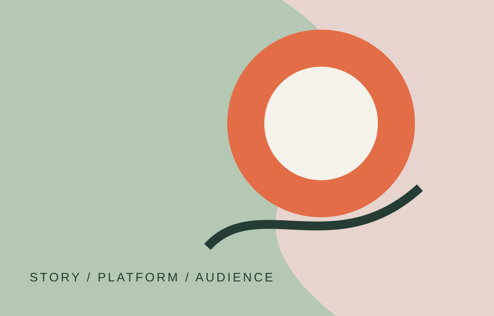

CASE STUDY / 02
Stories across
platforms.
A concept for a multi-platform story, from audience research and narrative planning to interaction design.
Project typeDigital storytelling
My roleConcept, audience, design
Year2026

Brief
Introduce the creative brief, audience and communication goal. What should the audience think, feel or do after encountering the story?
Experience design
Explain what each platform contributes and how audiences move between them. Describe the user journey and why the experience is arranged this way.
Outcome
Add screenshots, prototypes or links to the final work. State what you produced and how you evaluated whether it met the brief.
Reflection
Discuss what worked, what was challenging and what you would improve after testing or feedback.
Project links
Next case study
Reading the visual everyday ↗